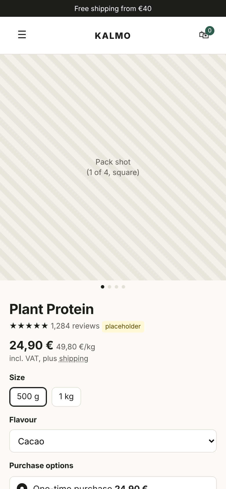
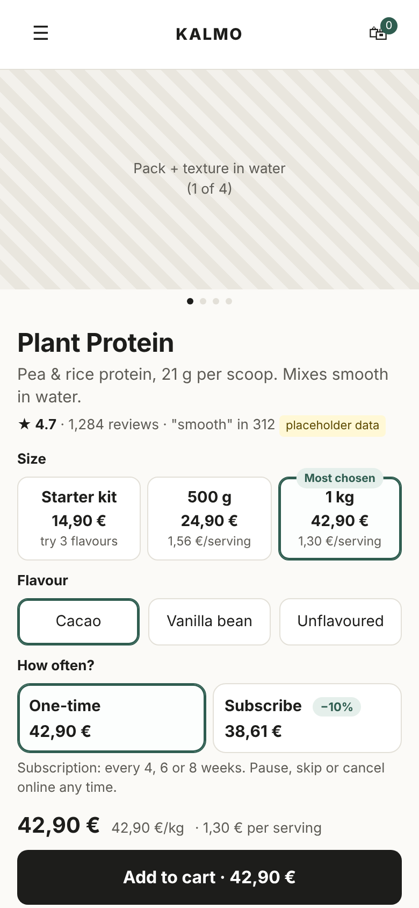
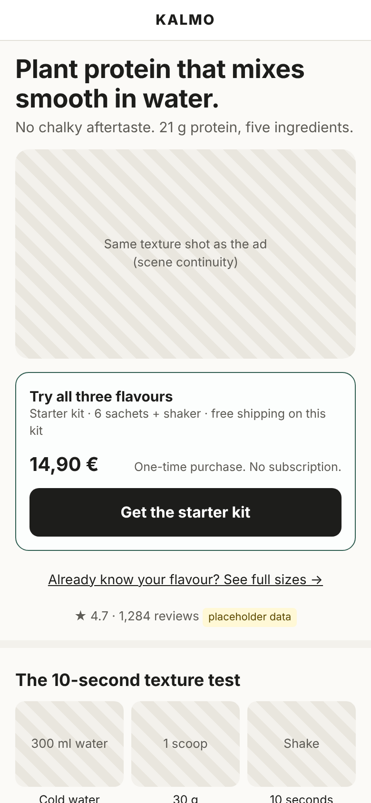

<!doctype html><html lang="en"><head><meta charset="utf-8"><meta name="robots" content="noindex, nofollow"><title>Mobile CRO Teardown (PDF)</title>
<style>
@page { size: Letter; margin: 0; }
* { box-sizing: border-box; } body { margin: 0; font: 11.5px/1.42 system-ui, -apple-system, "Segoe UI", sans-serif; color: #191917; background: #fff; }
.sheet { width: 8.5in; height: 11in; padding: .42in .48in; position: relative; overflow: hidden; break-after: page; } .sheet:last-child { break-after: auto; }
.eyebrow { font-size: 10px; color: #57554f; } h1 { font-size: 23px; line-height: 1.08; margin: 3px 0 6px; letter-spacing: -.02em; } h2 { font-size: 14px; margin: 12px 0 6px; }
.disc { border-left: 3px solid #2f5d50; background: #e3eeea; padding: 5px 9px; font-size: 10px; border-radius: 0 6px 6px 0; }
.stats { display: grid; grid-template-columns: repeat(4, 1fr); gap: 7px; margin: 9px 0; } .stats div { border: 1px solid #e2ded4; border-radius: 8px; padding: 6px 8px; } .stats b { font-size: 18px; display: block; } .stats b span { color: #8b8880; font-size: 12px; } .stats small { font-size: 9.5px; color: #57554f; }
.row { display: grid; grid-template-columns: 1.55in 1.55in 1fr; gap: 12px; align-items: start; }
.ph { position: relative; border: 5px solid #1b1b19; border-radius: 18px; overflow: hidden; } .ph img { width: 100%; display: block; }
.box { position: absolute; border: 1.2px solid #c2410c; border-radius: 3px; }
.cap { font-size: 9.5px; color: #57554f; margin-top: 4px; } .cap b { color: #191917; }
ol { margin: 3px 0 0; padding-left: 16px; } li { margin: 2px 0; }
table { width: 100%; border-collapse: collapse; font-size: 10px; } th { text-align: left; color: #57554f; border-bottom: 1px solid #8b8880; padding: 3px 4px; font-weight: 600; } td { border-bottom: 1px solid #e2ded4; padding: 3px 4px; vertical-align: top; }
.y { color: #2f5d50; font-weight: 700; } .n { color: #c2410c; font-weight: 700; }
.fm { display: grid; grid-template-columns: repeat(5, 1fr); gap: 6px; } .fm div { border: 1px solid #e2ded4; border-radius: 7px; padding: 6px 7px; font-size: 9.5px; } .fm b { display: block; font-size: 10px; margin-bottom: 2px; } .fm i { font-style: normal; font-size: 8.5px; font-weight: 700; color: #c2410c; } .fm i.g { color: #2f5d50; } .fm i.m { color: #57554f; }
.two { display: grid; grid-template-columns: 1fr 1fr; gap: 12px; } .box2 { border: 1px solid #e2ded4; border-radius: 8px; padding: 7px 9px; }
.law { display: grid; grid-template-columns: 1fr 1fr; gap: 7px; } .law div { border: 1px solid #e2ded4; border-radius: 8px; padding: 6px 8px; font-size: 9.8px; } .law b { display: block; font-size: 10.5px; }
.phase { display: grid; grid-template-columns: repeat(3, 1fr); gap: 7px; } .phase div { border: 1px solid #e2ded4; border-radius: 8px; padding: 6px 8px; } .phase .p { font-size: 16px; font-weight: 750; }
.foot { position: absolute; left: .48in; right: .48in; bottom: .28in; font-size: 9px; color: #57554f; border-top: 1px solid #e2ded4; padding-top: 4px; display: flex; justify-content: space-between; }
</style></head><body>
<section class="sheet" id="p1"></section><section class="sheet" id="p2"></section>
<script src="data.js"></script>
<script>
const T = window.T, $ = s => document.querySelector(s), pct = x => Math.round(x * 100) + '%';
const boxes = n => T.keys.filter(k => T.first[n][k]?.first_screen).map(k => { const r = T.first[n][k]; return `<div class="box" style="left:${r.left/3.9}%;top:${r.top/8.44}%;width:${r.width/3.9}%;height:${r.height/8.44}%"></div>`; }).join('');
const foot = n => `<div class="foot"><span>Fictional brand (Kalmo), placeholder reviews and data · measured on my prototypes in Chromium at 390 × 844, not on your store · not legal advice</span><span>${n} / 2</span></div>`;
const row = k => `<tr><td>${T.labels[k]}</td>${['before','after'].map(n => { const r = T.first[n][k]; return `<td class="${r?.first_screen ? 'y' : 'n'}">${r?.first_screen ? '✓' : '✗'}</td><td class="${r?.above_atc ? 'y' : 'n'}">${r?.present ? (r.above_atc ? '✓' : '✗') : '–'}</td>`; }).join('')}</tr>`;
$('#p1').innerHTML = `<div class="eyebrow">CRO teardown sample · Shopify DTC wellness · mobile first</div><h1>Where an interested customer loses momentum, and what to change first</h1>
<div class="disc">Worked sample on a fictional protein brand: friction map, a product page rebuilt around the buying decision, a paid-traffic landing page, and the German rules that shape them.</div>
<div class="stats"><div><b>${T.first_count.after}/7 <span>vs ${T.first_count.before}/7</span></b><small>decision items in the first phone screen</small></div><div><b>${T.task.after.taps} taps <span>vs ${T.task.before.taps}</span></b><small>to put "1 kg, Vanilla, every 8 weeks" in the cart</small></div><div><b>${pct(T.reach.after.reachable_share)} <span>vs ${pct(T.reach.before.reachable_share)}</span></b><small>of scroll positions with Add to cart in reach</small></div><div><b>${T.targets.after.under44} <span>vs ${T.targets.before.under44}</span></b><small>tap targets under 44 px</small></div></div>
<div class="row"><div><div class="ph">${boxes('before')}</div><div class="cap"><b>Typical theme</b>: ${T.first_count.before}/7 in the first screen</div></div>
<div><div class="ph">${boxes('after')}</div><div class="cap"><b>Decision-led</b>: ${T.first_count.after}/7, boxed</div></div>
<div><b>The question order</b><ol><li>What is it, and why this one?</li><li>Do people like it?</li><li>Which size, and why? (per-serving price, or the kit)</li><li>Which flavour?</li><li>Once, or regularly? Can I stop?</li><li>What will I pay? (per kg, per serving)</li><li>Add.</li></ol>
<table style="margin-top:8px"><thead><tr><th>Item</th><th>Typ. screen</th><th>above btn</th><th>New screen</th><th>above btn</th></tr></thead><tbody>${T.keys.map(row).join('')}</tbody></table>
<div class="cap">Subscription terms: typical layout only links to "How subscriptions work"; decision-led states frequency and "pause, skip or cancel online any time" at ${T.first.after.terms.top}px.</div></div></div>
<h2>Where momentum drops: hypotheses to confirm with your data in week 1</h2>
<div class="fm"><div><i>HIGH</i><b>Ad to landing</b>Ad sells texture; the click lands on a generic collection. Fix: a landing page that continues the ad.</div>
<div><i>HIGH</i><b>Product page, top</b>"What it is" sits below the button (typical layout: ${T.first.before.what.top}px). Fix: one line under the title.</div>
<div><i>HIGH</i><b>Choosing</b>Sizes without a reason to pick; terms behind a link. Fix: per-serving size cards, kit as a size, terms in view.</div>
<div><i class="g">FOUND WHILE PROTOTYPING</i><b>Cart</b>Subscribe & save takes 1 kg to 38,61 €, under the 40 € free-shipping line. Fix: subscriptions ship free.</div>
<div><i class="m">LEAVE MOSTLY ALONE</i><b>Checkout</b>Shopify's checkout is standardised. Also probably unchanged: brand identity, homepage hero, short navigation.</div></div>${foot(1)}`;
$('#p2').innerHTML = `<h2 style="margin-top:0">A landing page that continues the ad</h2>
<div class="row" style="grid-template-columns:1.55in 1fr"><div><div class="ph"></div><div class="cap">Headline, price and button in the first screen · button in reach at ${pct(T.reach.lp.reachable_share)} of scroll positions · ${T.task.lp.taps} tap to an open cart</div></div>
<div><ol><li><b>Message match:</b> the ad's words and image, so the visitor knows they are in the right place.</li><li><b>Offer for cold traffic:</b> a starter kit, clearly one-time. Strangers are not asked to subscribe.</li><li><b>Proof of the one claim:</b> the 10-second texture test, then reviews filtered to texture.</li><li><b>Objections, named</b> in the brand's voice: no countdown timers, no badge wall.</li><li><b>What arrives</b>, then <b>what happens next</b>: kit to 1 kg and an optional subscription, without pressure.</li><li><b>Questions, then the same button.</b> One offer, never a competing one.</li></ol>
<table style="margin-top:8px"><thead><tr><th>Page</th><th>Arrives from</th><th>Its job</th><th>Leaves out</th></tr></thead><tbody><tr><td>Homepage</td><td>Brand search, returning</td><td>Orient</td><td>Long education</td></tr><tr><td>Product page</td><td>Collections, search, returning</td><td>Close the decision on one product</td><td>Competing offers</td></tr><tr><td>Landing page</td><td>One ad, one audience</td><td>Carry one promise to one offer</td><td>Navigation, other products</td></tr></tbody></table></div></div>
<h2>German rules that shape the design (constraints, not a legal review)</h2>
<div class="law"><div><b>Unit price at a glance · PAngV §4, §5</b>Price per 1 kg or 1 l with every price, including the subscription price; not behind a tap or mouse-over.</div>
<div><b>Subscriptions · §312k BGB</b>"Verträge hier kündigen" reachable from every page since July 2022; BGH (16 July 2026): no pause or discount offers on the confirmation page. So "cancel online any time" belongs next to Subscribe, as reassurance.</div>
<div><b>Health claims · Reg. 432/2012</b>Only authorised wording. Protein has three claims (muscle growth, muscle maintenance, normal bones). "Supports recovery" is not one.</div>
<div><b>Strike-through prices · PAngV §11</b>Advertised reductions show the lowest price of the previous 30 days, so offers are designed with it built in.</div></div>
<h2>How I would work</h2>
<div class="two"><div class="box2"><b>Week 1 diagnosis</b><ol><li>Split the funnel by device, landing page, new vs returning.</li><li>Watch 40-60 mobile sessions on the highest-spend landing pages.</li><li>Tag reviews, tickets and on-site search by objection.</li><li>Buy every product on Android and iPhone, kit and subscription included.</li><li>Friction map with evidence, confidence, fix, and what not to change.</li></ol></div>
<div class="box2"><b>I do</b> strategy and UX, Figma design (desktop + mobile, components with states, developer specs, your brand), and Shopify OS 2.0 implementation as an optional Phase 4.
<div class="phase" style="margin-top:8px"><div>Diagnosis<div class="p">$1,400</div>weeks 1-1.5</div><div>Wireframes<div class="p">$1,400</div>weeks 2-3</div><div>Figma hi-fi<div class="p">$2,000</div>weeks 4-5</div></div><p style="margin:6px 0 0"><b>$4,800 fixed, 5 weeks</b> for the CRO review, priority product page and one landing page.</p></div></div>${foot(2)}`;
</script></body></html>
